library(tidyverse)
library(DESeq2)
library(pheatmap)
library(ggrepel)
library(scales)
library(patchwork)
# Set up output directory
if (!dir.exists("plots/tut-3")) {
dir.create("plots/tut-3", recursive = TRUE, showWarnings = FALSE)
}DESeq2 Deep Dive
Setting up
Acknowledgements
Aside from the DESeq2 paper itself (and the earlier DESeq paper), additional explanation from Mistry et al. from the Harvard Chan Bioinformatics Core was very helpfull in compiling this material. In addition, I used Claude Opus 4.6’s understanding of DESeq2, which I fact-checked with aforementioned resources and in the original DESeq2 source code (15f2ec9).
Libraries
Import libraries that we’ll need.
Define some functions and settings to make our plots look fancy later.
# Bars should be black per default
update_geom_defaults("bar", list(fill = "black")) # sets it globally for session
# Custom adjust font function (to be used with ggplot2)
custom_adjust_fonts <- function(size = 15, family = "Arial") {
theme(
text = element_text(size = size, family = family),
axis.text = element_text(size = size, family = family),
axis.title = element_text(size = size, family = family),
plot.title = element_text(size = size, family = family),
plot.subtitle = element_text(size = size, family = family),
legend.text = element_text(size = size, family = family),
legend.title = element_text(size = size, family = family),
strip.text = element_text(size = size, family = family)
)
}
# Custom function to set bar graph settings I prefer (to be used with ggplot2)
custom_theme_bar <- function() {
list(
theme_classic(),
theme(
axis.text.x = element_text(angle = 90, hjust = 1, vjust=.5),
plot.title = element_text(hjust = .5)
),
scale_y_continuous(
labels = scales::label_comma(),
expand = expansion(mult = c(0, 0.05)),
limits = c(0, NA)
),
custom_adjust_fonts()
)
}Load data
Let’s first load two datasets: - The synthetic one that was generated in tutorial 1. - Example dataset GLDS38, for which pre-processed count data is available in the data-real/ directory.
# Import the table
count_data_synth <- read.table("data_frozen/count_table.tsv",
sep = "\t",
header = TRUE,
row.names = 1,
check.names = FALSE)
# Also import real data (spaceflight)
# (Downloaded from https://github.com/mishapaauw/RNA-seq-workshop/tree/main/data
# where Misha created a downsampled version of the original data.)
count_data_real <- read.csv("/Users/m.wehrens/Data_UVA/example-datasets/2026_RNAseq-Misha/GLDS38_raw_counts.csv",
row.names=1)
count_data_real_meta <- read.csv("/Users/m.wehrens/Data_UVA/example-datasets/2026_RNAseq-Misha/samples_to_condition.csv",
row.names=1)
TEST_RUN = TRUE
if (TEST_RUN) {
# subset `count_data_real` to first 3000 rows
count_data_real <- count_data_real[1:3000, ]
}
# Now show And let’s convert this to the tidy (aka ‘long’) format.
# Convert synthetic data to long format
count_data_synth_long <- count_data_synth %>%
rownames_to_column(var="gene") %>%
pivot_longer(-gene,
names_to = "condition",
values_to = "counts")
# Convert real data to long format
count_data_real_long <- count_data_real %>%
rownames_to_column(var="gene") %>%
pivot_longer(-gene,
names_to = "sample",
values_to = "counts") %>%
# Additionally, set condition to FLT or GC, based on presence of _FLT_ or
# _GC_ string in sample name column
mutate(condition = case_when(
str_detect(sample, "_FLT_") ~ "FLT",
str_detect(sample, "_GC_") ~ "GC",
TRUE ~ sample
)) |>
# convert to factors with lvl order
mutate(condition = factor(condition, levels=c("GC", "FLT"))) |>
# And create abbreviated sample names
mutate(sample_brief=str_remove(sample, "Atha_WT_Col_0_sl_")) |>
mutate(sample_brief=str_remove(sample_brief, "_G.S.$")) Overview of the DESeq2 appraoch
When running the DESeq2 analysis, we see the following output:
estimating size factors
estimating dispersions
gene-wise dispersion estimates
mean-dispersion relationship
final dispersion estimates
fitting model and testingXXXXXXXXX
What happens during the DESeq2 analysis?
- Normalization using size factors
- Dispersion estimate
- Estimate dispersion per gene
- **
Normalization: size factors
A simple approach
If sample 1 in total has 5000 reads, and sample 2 in total has 10000 reads (a higher “sequencing depth”), and we consider a gene X, we expect that gene to have more reads in sample 2. In fact, a good guess would be that gene X has 2 times as many reads in sample 2. This is of course not due to biology, but due to the fact that we sequenced sample 2 more.
So, to more honestly compare samples, we need to normalize for the amount of reads in each samples.
When we have count table where rows correspond to genes, and columns to samples, we could simply divide each column by its total, and work with those values. Or, one step better, do that, and multiply with the mean of total sample counts, such that the values we end up with are in the same range as those with which we started.
DESeq2’s approach
DESeq2 takes a little more sophisticated appraoch. They make the argument that we’re intersted in genes that show changes due to regulation.
“The total number of reads, \(\sum_i k_{i,j}\), may seem to be a good measure of sequencing depth and hence a reasonable choice for \(s_j\). Experience with real data, however, shows this not always to be the case, because a few highly and differentially expressed genes may have strong influence on the total read count, causing the ratio of total read counts not to be a good estimate for the ratio of expected counts.” – (Anders & Huber, 2010))
When there are a few highly-abundant genes are upregulated, the concentrations of the other genes in the cells will go down, as the size of the total transcriptome remains similar. (And conversely, if highly-abundant genes go down, other genes’ concentrations will go up.)
DESeq2 thus tries to normalize both for sequencing depth, and this second order effect. It assumes that most gene don’t change, and calculates the median change in counts over all genes as a ‘size factor’ that reflects sequencing depth and the second order effect. Changes in gene expression that remain left after normalization with the size factor then should reflect change that we’re intersted in.
Technically, DESeq2 calculates a pseudo-reference sample, with arithmetic averages over the samples for each gene, then normalizes each gene by the reference sample, and then calculates the median normalized expression per sample. This somewhat complex scheme is summarized below:
| Gene | sampleA | sampleB | Pseudo-reference sample | sampleA/ref | sampleB/ref |
|---|---|---|---|---|---|
| EF2A | 1489 | 906 | sqrt(1489 * 906) = 1161.5 | 1489/1161.5 = 1.28 | 906/1161.5 = 0.78 |
| ABCD1 | 22 | 13 | sqrt(22 * 13) = 17.7 | 22/16.9 = 1.30 | 13/16.9 = 0.77 |
| … | … | … | … | … | … |
| size factor sampleA: median(1.28, 1.30, ..) = 1.30 | size factor sampleB: median(0.78, 0.77, ..) = 0.78 |
Let’s go over this with some code.
Total reads per sample
First, let’s simply show the total reads per sample:
# First determine total reads per sample
df_total_reads <- count_data_real_long |>
group_by(sample) |>
summarize(total_counts = sum(counts))
# Now plot in bar graph
p <- df_total_reads |>
mutate(sample=str_remove(sample, "Atha_WT_Col_0_sl_")) |>
ggplot(aes(x=sample, y=total_counts)) +
geom_bar(stat="identity") +
xlab('Sample')+ylab('Total counts')+
custom_theme_bar()
# save
ggsave("plots/tut-3/total_counts_per_sample.pdf", plot=p, width=10, height=16, units='cm', device=cairo_pdf)
# and show
p + custom_adjust_fonts(12)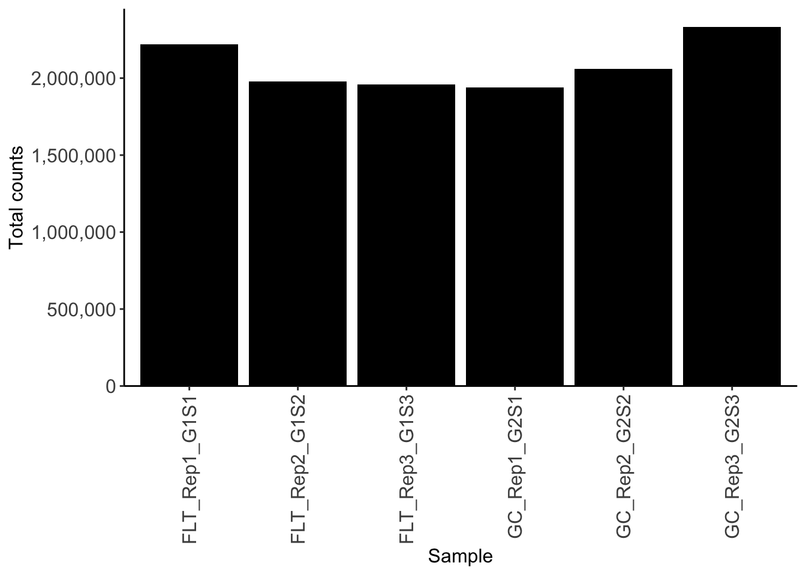
Estimate size factors manually
Now, estimate the size factors per sample, the same way DESeq2 does it.
# Estimate the "size factors"
# Create reference sample; geometric mean
df_size_factors <- count_data_real_long |>
# Calculate geometric means of gene values
group_by(gene) |>
mutate(geom_mean = exp(mean(log(counts)))) |>
# More explicit alternative; theoretically same, though less numerically stable
# mutate(geom_mean = median(prod(counts)^(1/(length(counts))))) |>
ungroup() |>
# Filter out zero values (choice following DESeq2)
filter(geom_mean > 0) |>
# Now normalize the counts by geom mean
mutate(counts_norm = counts/geom_mean) |>
# And calculate median normalized counts (=size factor)
group_by(sample) |>
summarize(size_factor = median(counts_norm, na.rm=TRUE))
# now plot those
p2 <- df_size_factors |>
mutate(sample=str_remove(sample, "Atha_WT_Col_0_sl_")) |>
ggplot(aes(x=sample, y=size_factor)) +
geom_bar(stat="identity") +
xlab('Sample') + ylab('Size factor') +
custom_theme_bar()
# save
ggsave("plots/tut-3/size_factors_per_sample.pdf", plot=p, width=10, height=16, units='cm', device=cairo_pdf)
# show side by side with totals
(p + custom_adjust_fonts(12) + ggtitle("Total read count")) +
(p2 + custom_adjust_fonts(12) + ggtitle("Size factor"))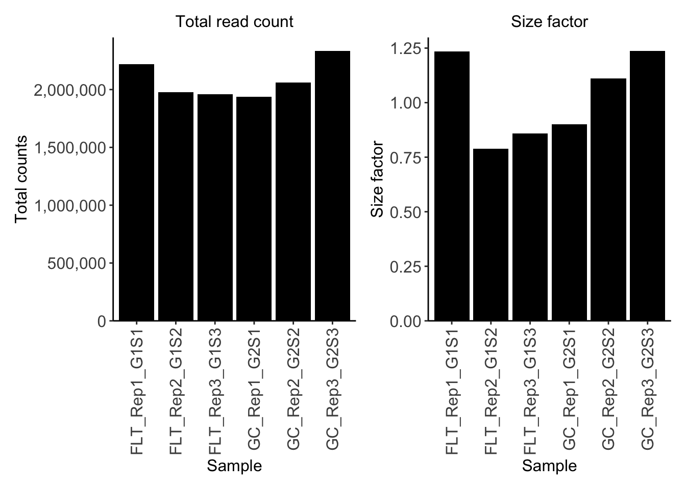
As you can see, relative changes in these quantities between samples are similar but not equal.
Compare manual size factors with DESeq2
As a sanity check, let’s see whether this matches DESeq2’s calculation:
# Let's see how well this matches DESeq2's assessment
# Set up a dds
dds <- DESeqDataSetFromMatrix(countData = count_data_real,
colData = count_data_real_meta,
design = ~ condition)
dds <- estimateSizeFactors(dds)
the_sizefactors <- sizeFactors(dds)
df_size_factors_deseq2 <- data.frame(
size_factor = unname(the_sizefactors),
sample = names(the_sizefactors))
# now comparison
df_size_factors_all <-
rbind( df_size_factors |> mutate(origin="manual"),
df_size_factors_deseq2 |> mutate(origin = "deseq2"))
# now plot
p <- df_size_factors_all |>
mutate(sample = str_remove(sample, "Atha_WT_Col_0_sl_")) |>
ggplot(aes(x = sample, y = size_factor, fill = origin)) +
geom_bar(stat = "identity", position = "dodge") +
theme(axis.text.x = element_text(angle = 90, hjust = 1)) +
scale_fill_manual(values = c("manual" = "black", "deseq2" = "red")) +
xlab('Sample') + ylab('Size factor') +
custom_theme_bar()
ggsave("plots/tut-3/size_factors_manual_vs_deseq2.pdf", plot = p, width = 10, height = 16, units = "cm", device=cairo_pdf)
p + custom_adjust_fonts(12)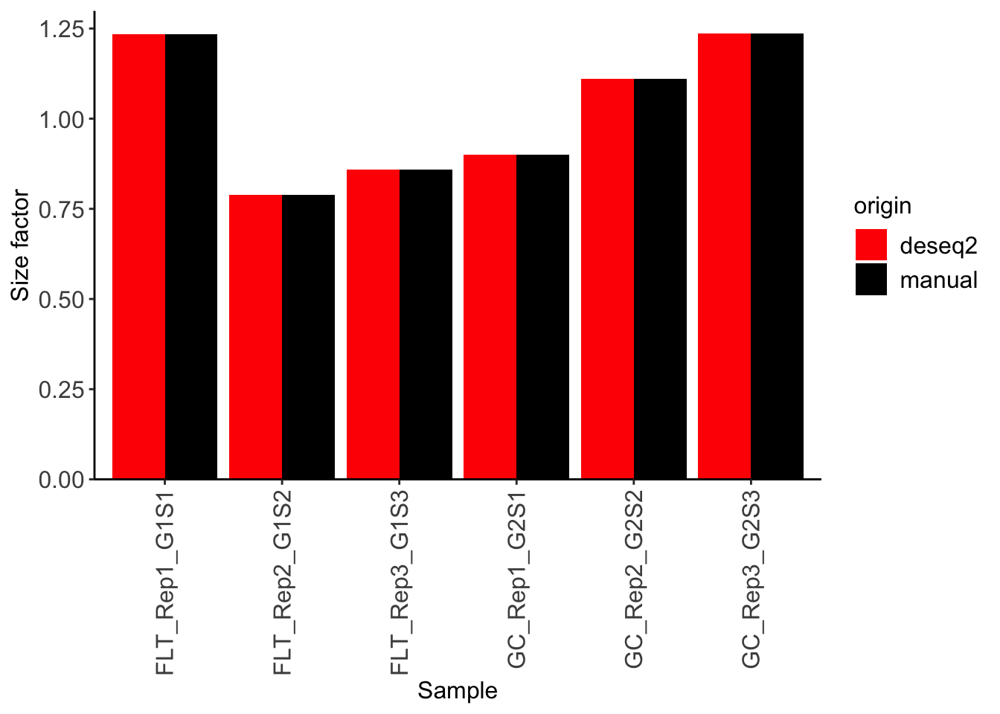
The agreement between these bars shows that our manual calculation of the size factors exactly matches DESeq2’s calculation.
Manually normalize genes and see effect
Let’s now apply normalization of the count values, and illustrate the effect with a plot for 10 random genes.
# set seed for reproducibility
set.seed(123)
# add size factors to count table, and add normalized counts to table
count_data_real_long_normalized <- count_data_real_long |>
left_join(df_size_factors, by='sample') |>
mutate(normalized_count = counts/size_factor)
# plot 10 random genes, with raw and normalized counts
p <- count_data_real_long_normalized |>
pivot_longer(cols=c(counts, normalized_count), names_to="type", values_to = "counts") |>
filter(gene %in% sample(unique(gene), 9)) |>
ggplot(aes(x=sample_brief, y=counts, color=type, shape=condition)) +
# geom_bar(stat="identity", position="dodge") +
geom_point() +
facet_wrap(~gene, scales = "free_y", ncol = 3) +
theme_classic() +
xlab('Condition') + ylab('Counts') +
scale_color_manual(values = c("counts" = "black", "normalized_count" = "red")) +
# scale_color_manual(values = c("FLT" = "darkblue", "GC" = "brown")) +
custom_theme_bar()
# and save
ggsave("plots/tut-3/normalized_counts_example_raw.pdf", plot=p, width=25, height=15, units='cm', device=cairo_pdf)
p + custom_adjust_fonts(12)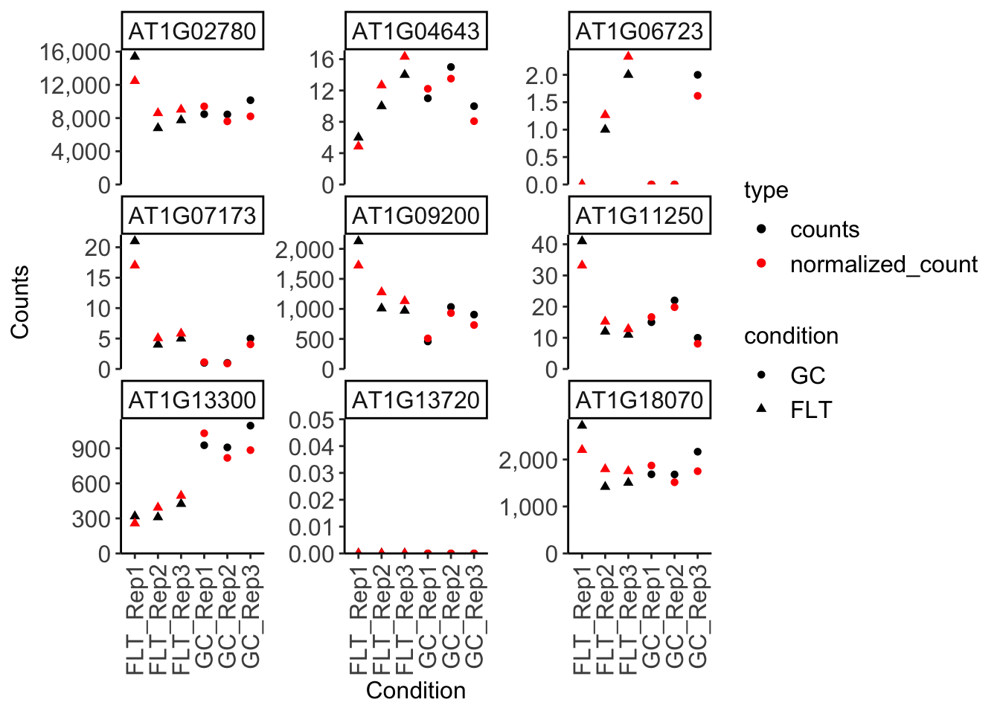
In the plot above, the red points better reflect the true transcript concentrations compared between the samples.
As a final point, note that the total counts for each sample are not equal after DESeq2’s normalization.
# Let's do a full run
dds_full <- DESeq(dds)using pre-existing size factorsestimating dispersionsgene-wise dispersion estimatesmean-dispersion relationshipfinal dispersion estimatesfitting model and testing# We can now also get normalized count matrix from deseq2
normalized_counts <- counts(dds_full, normalized=TRUE)
# Which doesn't have all sample totals equal
colSums(normalized_counts)Atha_WT_Col_0_sl_FLT_Rep1_G1S1 Atha_WT_Col_0_sl_FLT_Rep2_G1S2
1798525 2505803
Atha_WT_Col_0_sl_FLT_Rep3_G1S3 Atha_WT_Col_0_sl_GC_Rep1_G2S1
2285198 2154457
Atha_WT_Col_0_sl_GC_Rep2_G2S2 Atha_WT_Col_0_sl_GC_Rep3_G2S3
1856412 1886813 p <- count_data_real_long_normalized |>
pivot_longer(cols=c(counts, normalized_count), names_to="type", values_to = "counts") |>
group_by(sample_brief, type) |>
summarize(total_counts = sum(counts)) |>
ungroup() |>
ggplot(aes(x=sample_brief, y=total_counts, fill=type)) +
geom_bar(stat="identity", position="dodge") +
theme_classic() +
xlab('Condition') + ylab('Total counts') +
scale_fill_manual(values = c("counts" = "grey", "normalized_count" = "black")) +
custom_theme_bar() +
theme(legend.position = "none")`summarise()` has grouped output by 'sample_brief'. You can override using the
`.groups` argument.ggsave(
"plots/tut-3/normalization_comparison.pdf",
plot=p, width=20, height=15, units='cm', device=cairo_pdf
)
p + custom_adjust_fonts(12)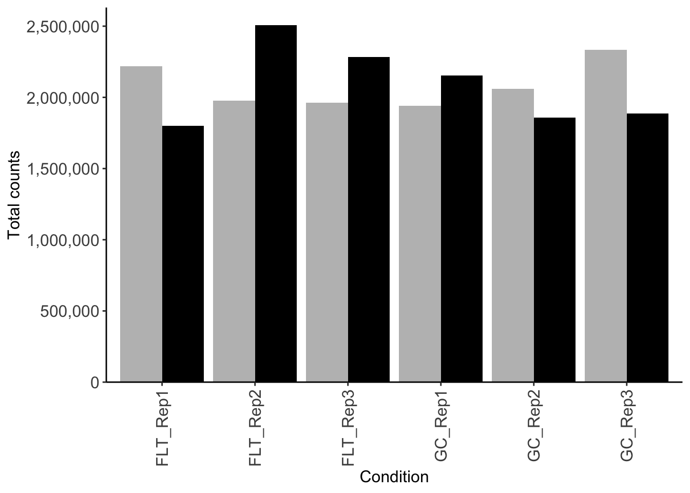
In the plot above, the grey colored bars indicate total counts per sample before normalization, the black bars indicate total counts after normalization. As you can see, normalized counts (black) are (somewhat) more equal in height, but still different from each other.
Calculate dispersions
What’s dispersion and why is it important
As mentioned, in the end, our aim is to know how changes in gene expression depend on the different conditions of our experiment.
Due to technical and biological factors, gene expression counts will vary, even within the same condition. Dispersion (variability) refers to the extent by which observations of a quantity, in this case counts, vary.
In the example with gene A below, we can say with high likelihood that the gene is differentially expressed, whilst in the example with gene B, we can be less sure of that.
Code
set.seed(123)
df_example_simpleDE <-
data.frame(
counts = c(
20+rnorm(n = 3, mean = 10, sd = .25),
20+rnorm(n = 3, mean = 15, sd = .25),
20+rnorm(n = 3, mean = 10, sd = 15),
20+rnorm(n = 3, mean = 15, sd = 15)
),
gene = c(
rep('gene A\n(low dispersion)', 6),
rep('gene B\n(high dispersion)', 6)
),
condition = c(
rep('Control',3),
rep('Treatment',3),
rep('Control',3),
rep('Treatment',3)
))
p <- df_example_simpleDE |>
ggplot(aes(x=condition, y=counts))+
geom_point()+
facet_grid(cols = vars(gene))+
theme_classic() +
ylab("Counts")+
xlab("Condition")+
ggtitle("n=3") +
theme(plot.title = element_text(hjust = 1)) +
custom_adjust_fonts()
# save
ggsave("plots/tut-3/dispersion_example.pdf", plot=p, width=13, height=12, units='cm', device=cairo_pdf)
p + custom_adjust_fonts(12)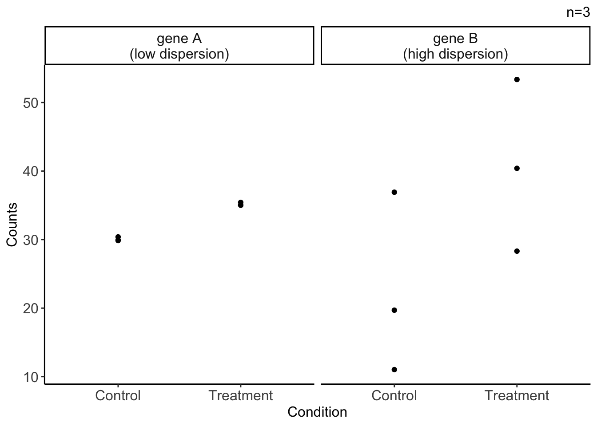
Code
# Print fold-changes
df_FC <- df_example_simpleDE %>%
group_by(gene, condition) %>%
summarise(mean_count = mean(counts), .groups = "drop") %>%
pivot_wider(names_from = condition, values_from = mean_count) %>%
mutate(FC = Treatment/Control)
print(paste0("Gene A has FC=", round(df_FC$FC[1],2),", ","Gene B has FC=", round(df_FC$FC[2],2)))[1] "Gene A has FC=1.17, Gene B has FC=1.8"In these examples you can see by eye that there is a high variability in gene B’s expression, which is why we trust the fold change estimate much less.
Trying to answer which genes are truely differentially expresssed, is our reason to use a tool like DESeq2, which will produce statistics to say something about this.
As you can see from the example above, dispersion (variability) plays a big role in determining whether we can trust the fold change estimate. Indeed, dispersion estimates play a central role in DESeq2’s ability to calculate stastistics that inform us about the extent and significance of differential gene expression.
Estimating dispersion plays a large role in DESeq2
A load of code in DESeq2 is dedicated to estimate the dispersion (variability) in each gene’s expression that is not due to differences in experimental conditions. In broad strokes, this estimated dispersion for each gene is then used to:
- Inform statistical testing. At the end of the DESeq2 procedure, a p-value is calculated to determine statistical significance of the differential expression. In the calculation of this p-value, an estimate of the dispersion is used.
- Improve L2FC estimates. DESeq2 will estimate the fold-change, which is based on the data, but variability estimates are used to refine the estimate.
- Improve PCA accuracy. Optionally, you can create a modified gene count matrix in which dispersion information is to normalize the dispersion. When you use a PCA for data visualization, basing it on the variance normalized (“variance-stabilized”) count matrix, will result in a more accurate representation of the data by the PCA.
The dispersion is not similar for all genes
Since the goal is to estimate dispersion that is not due to experimental conditions, let’s take a better look at the dispersion, and calculate some metrics that quantify that dispersion.
# First for the synthetic data
# now calculate mean, variance and sd
df_dispersion_synth <- count_data_synth_long %>%
group_by(gene) %>%
summarise(mean = mean(counts),
sd = sd(counts),
variance = var(counts)) %>%
# also calculate "alpha", which we'll use later
mutate(alpha = (variance-mean)/mean^2)
# Then for the real data
# now calculate mean, variance and sd
df_dispersion_real <- count_data_real_long %>%
group_by(gene, condition) %>%
summarise(mean = mean(counts),
sd = sd(counts),
variance = var(counts)) %>%
# also calculate "alpha", which we'll use later
mutate(alpha = (variance-mean)/mean^2)`summarise()` has grouped output by 'gene'. You can override using the
`.groups` argument.When we look at the values that we now have, we’ll see that there is a wide range of dispersion values per gene:
# Histogram of dispersion values for all genes
p <- df_dispersion_real |>
ggplot(aes(x=sd)) +
geom_histogram(bins=100) +
theme_classic() +
scale_x_log10(labels = scales::label_comma()) +
xlab("Standard deviation for a gene") +
ylab("Times observed") +
ggtitle("Spaceflight data") +
custom_theme_bar()
ggsave("plots/tut-3/dispersion_histogram.pdf", plot=p, width=10, height=10, units='cm', device=cairo_pdf)
p + custom_adjust_fonts(12)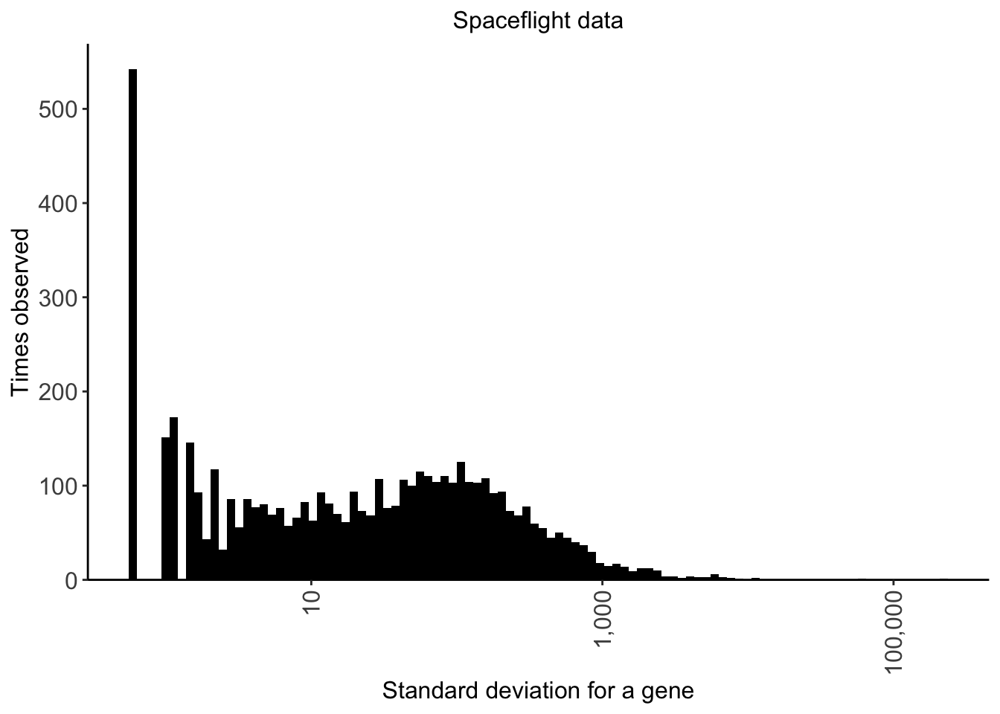
If we plot the standard deviation versus the mean, we’ll see that there’s a clear dependency of the sd on the mean.
# sd versus mean relationship
p <- df_dispersion_real |>
ggplot(aes(x=mean, y=sd)) +
# trendline
geom_smooth(method='lm', formula = y ~ x, color='red') +
# points
geom_point(alpha=.1) +
# R = ..
annotate("text", x = 0.1, y = max(df_dispersion_real$sd)*.95,
label = paste0("R = ", round(cor(df_dispersion_real$mean, df_dispersion_real$sd), 2)),
hjust = 0, vjust = 1) +
theme_classic() +
scale_x_log10() + scale_y_log10() +
xlab("Mean expression (log scale)") +
ylab("Standard deviation (log scale)") +
ggtitle("Spaceflight data")
ggsave("plots/tut-3/dispersion_sd_vs_mean.pdf", plot=p, width=10, height=10, units='cm', device=cairo_pdf)
p + custom_adjust_fonts(12)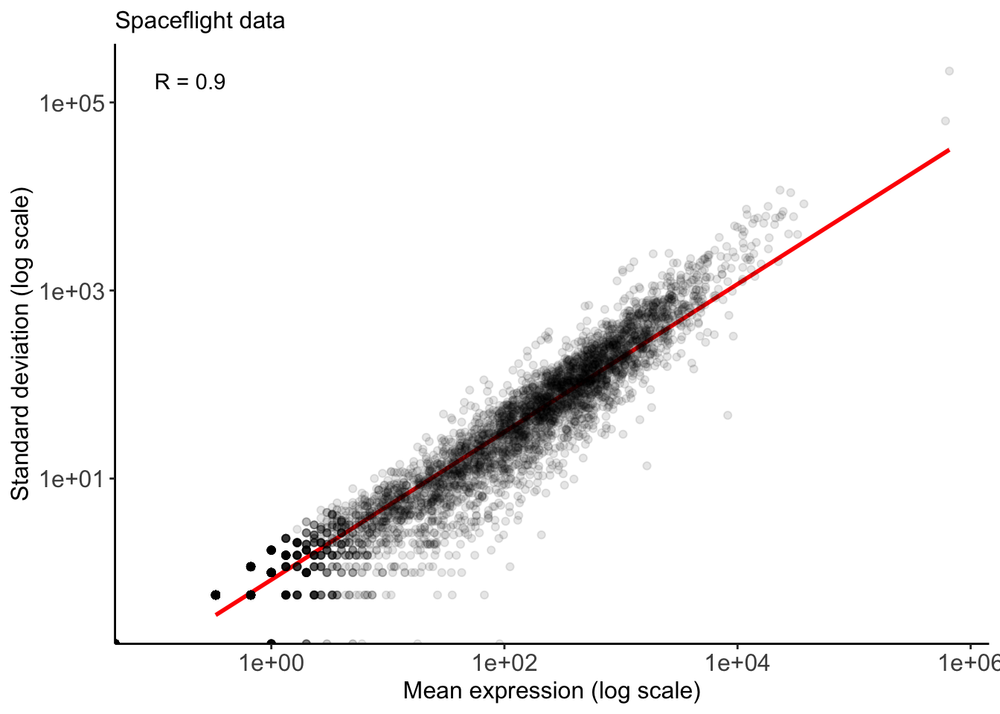
What DESeq2 will try to do is quantify this trend, and use that to estimate each gene’s dispersion due to “randomness” (which is then later used to calculated p-values, et cetera, as mentioned above).
Obtaining good dispersion estimates
Specifically, DESeq2 assumes gene count values show statistics that are consistent with a negative binominal distribution. For such a distribution, the variance and mean are related by the following relationship:
\[ \text{variance} = \mu + \alpha \cdot \mu^2 \]
With \(\alpha\) a free parameter that determines how the relationship looks precisely. Let’s see how consistent the data is with this assumption:
# Fit alpha
# The function describing variance = mu + alpha * mu^2
fn_NBvariance <- function(mu, alpha) {
return(mu + alpha * mu^2)
}
# Let's first fit the dispersion coefficient
# Fit alpha in: variance = mu + alpha * mu^2
# Use nls on log-transformed values for a better fit across the wide range
df_fit <- df_dispersion_real %>% filter(mean > 0, variance > 0)
fit <- nls(log(variance) ~ log(mean + alpha * mean^2),
data = df_fit,
start = list(alpha = 0.01),
control = nls.control(maxiter = 200))
MY_ALPHA_real <- coef(fit)[["alpha"]]
cat("Fitted alpha:", MY_ALPHA_real, "\n")Fitted alpha: 0.05082241 # Now plot
p <- ggplot(df_dispersion_real, aes(x=mean, y=variance)) +
geom_point(color='black', alpha=.2) +
geom_density2d(color='black', bins=5) +
# geom_abline(slope=1, intercept=0, color='red', size=1) +
stat_function(fun=fn_NBvariance, args=list(alpha=MY_ALPHA_real), color='orange', size=1) +
stat_function(fun=fn_NBvariance, args=list(alpha=MY_ALPHA_real), color='black', size=.25) +
scale_x_log10() + scale_y_log10() +
theme_classic() +
annotate("text", x = 0.1, y = max(df_dispersion_real$variance)*.95,
label = paste0("variance = mean + alpha * mean^2\nalpha =",round(MY_ALPHA_real,2)),
hjust = 0, vjust = 1) +
xlab('Mean gene expression (all conditions)') +
ylab('Variance in gene expression (all conditions)') +
ggtitle('Spaceflight data')
# export to directory plots/tut-3/
ggsave("plots/tut-3/dispersion_variance_mean_real_data.pdf", plot=p, width=10, height=10, units='cm')
p + custom_adjust_fonts(12)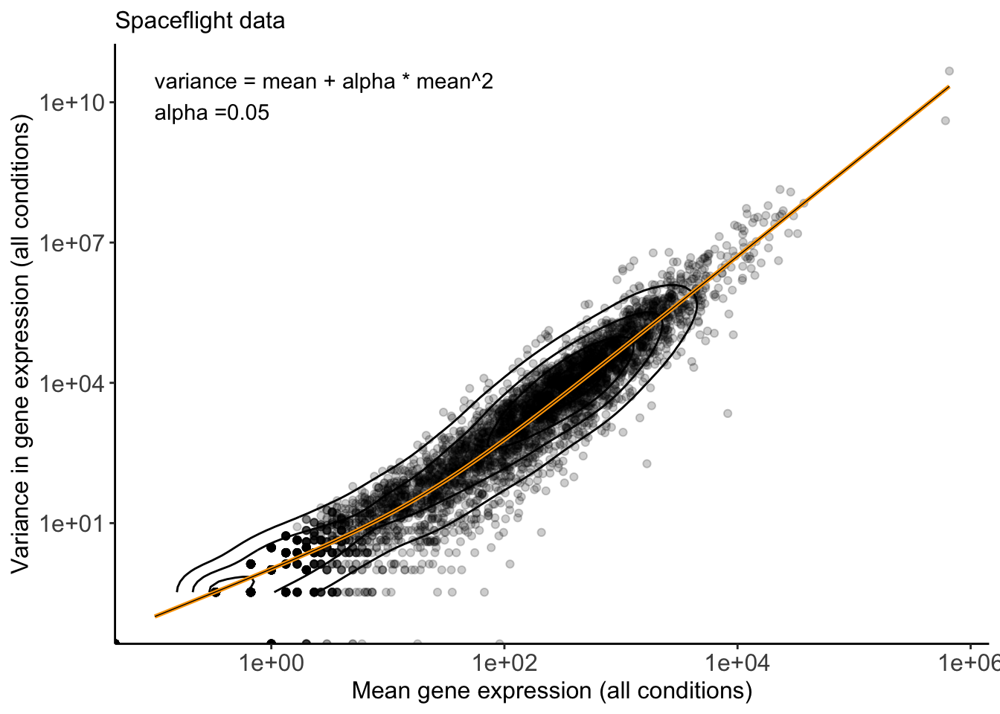
This seems to work rather well for our data. Using this information, we can now estimate the variability of any gene, given its mean \(\mu\):
\[ \text{estimated variance}_\text{gene} = \mu_\text{gene} + \alpha_\text{global fit} \cdot \mu_\text{gene}^2 \]
This is great! If we now have a gene whos average expression is different between two conditions, we can use this information to estimate how likely it is that that difference was due to chance.
Using the estimated gene variance to calculate p-values
Let’s illustrate how the estimated variance can be used to determine p-values by looking at a randomly selected gene.
Code
set.seed(1234)
# Let's take a gene with not too many counts (not entirely random after all)
example_gene <- sample(
(count_data_real_long %>% filter(counts > 10 & counts < 15))$gene,
1
)
mean_GC <-
mean(
(
count_data_real_long %>%
filter(gene == example_gene & condition == 'GC')
)$counts
)
p <- count_data_real_long %>%
filter(gene == example_gene) %>%
ggplot() +
geom_jitter(aes(x = counts, y = 0, color=condition), height=.006, width=0, size=5) +
scale_color_manual(values = c("GC" = "orange", "FLT" = "darkblue")) +
ylim(c(-.02, .1)) +
theme_classic() +
# add a gaussian with mu = mean_GC, and sd = sqrt(estimated variance for this gene)
# geom_function(
# fun = function(x) dnorm(x, mean = mean_GC, sd = sqrt(fn_NBvariance(mean_GC, MY_ALPHA_real))),
# color = "orange",
# size = 1
# ) +
#
# .. but the model uses a neg binominal
# (use geom_point at integer x values, since dnbinom is a discrete PMF)
geom_line(
data = data.frame(x = 0:60) |> mutate(y = dnbinom(x, mu = mean_GC, size = 1/MY_ALPHA_real)),
aes(x = x, y = y),
color = "orange",
size = 1
) +
xlim(c(0,60)) +
ylab("Probability for negative binominal distribution") +
xlab("Counts") +
custom_adjust_fonts(15) +
ggtitle(paste0('Counts for ', example_gene))
# Save
ggsave("plots/tut-3/statistics-gene-example.pdf", plot=p, width=17, height=13, units='cm', device=cairo_pdf)
# And show
p + custom_adjust_fonts(12)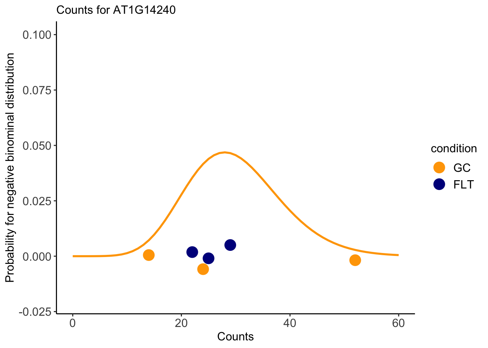
The points (solid circles) indicate count data from the experiment, and the yellow line indicates the predicted distribution for the control condition (GC in this case; following a negative binomial probability with this gene’s mean, and variance as extrapolated above).
To determine whether there is statistical evidence for differential expression, we want to know the probability that the count values of the FLT conditions occured only by chance. That is, given the yellow distribution (H0), what is the chance of finding these FLT values.
The probability getting a single value that’s higher than a value x, e.g. \(x = 21\), is the integrated probability of the negative binominal.
Code
# Calculate the probability that x > 21, assuming neg bin distribution
prob_x21 <- 1 - pnbinom(21, mu = mean_GC, size = 1/MY_ALPHA_real)
# And plot
p <- count_data_real_long %>%
filter(gene == example_gene) %>%
ggplot() +
ylim(c(-.02, .1)) +
theme_classic() +
geom_area(
data = data.frame(x = 21:60) |> mutate(y = dnbinom(x, mu = mean_GC, size = 1/MY_ALPHA_real)),
aes(x = x, y = y),
color = "orange",
fill = "lightgrey",
size = 1
) +
geom_line(
data = data.frame(x = 0:60) |> mutate(y = dnbinom(x, mu = mean_GC, size = 1/MY_ALPHA_real)),
aes(x = x, y = y),
color = "orange",
size = 1
) +
geom_point(aes(x = 21, y = 0, color=condition), height=.006, width=0, size=5, color="darkblue") +
annotate("text", x = 22, y = max(dnbinom(0:60, mu = mean_GC, size = 1/MY_ALPHA_real))*0.1,
label = paste0("P(x > 21) = ", round(prob_x21, 2)),
hjust = 0, vjust = 1) +
xlim(c(0,60)) +
ylab("Probability for negative binominal distribution") +
xlab("Counts") +
custom_adjust_fonts(15) +
ggtitle(paste0('Counts for ', example_gene))
# Save
ggsave("plots/tut-3/statistics-gene-example-chance.pdf", plot=p, width=14, height=13, units='cm', device=cairo_pdf)
# And show
p + custom_adjust_fonts(12)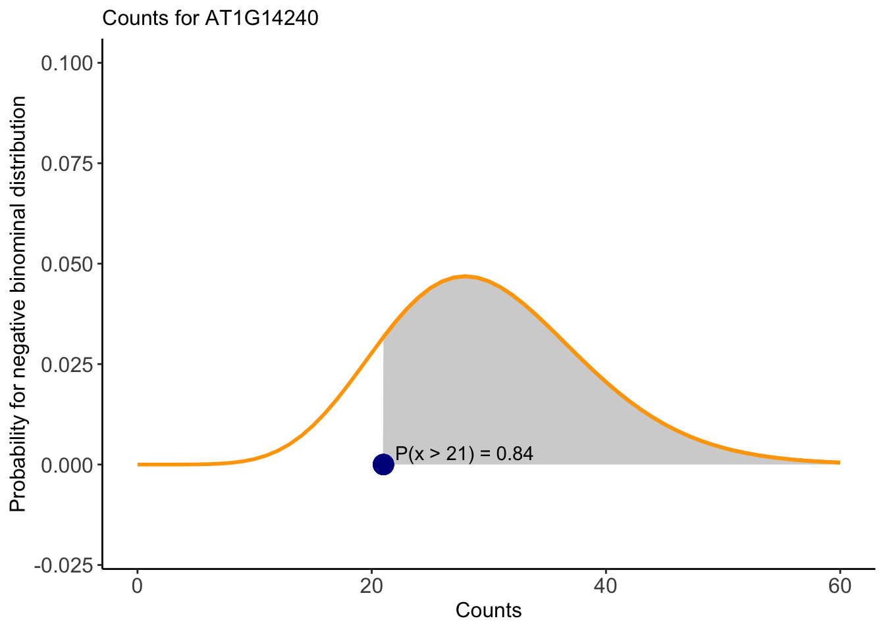
E.g., the probability of AT1G14240 showing >21 counts is 0.84, so very likely under H0.
However, we want to calculate the likelihood that the mean of multiple FLT count observations are higher (or lower) than the GC mean (reference condition). To do this, we can use a Wald or t-test.
These are very related, both have the same test statistic:
\[ \frac{\mu_{GC} - \text{mean}_\text{FLT}}{\sqrt{\text{variance}}/\sqrt{N}} \]
Here, \(\mu\) indicates our H0 population mean, which in practice will be the mean, \(\text{mean}_\text{GC}\). \(\text{variance}\) is the variance in the counts. Note that \(\sqrt{\text{variance}}/\sqrt{N}\) equals the standard error \(\text{SE}\), which will be relevant later.
In the t-test, this test statistic is assumed to follow the t-distribution. In the Wald test, this test statistic is assumed to follow a normal distribution. The location of the test statistic on the curve indicates the probability of H0 being true, and thus the statistical significance of the observed difference between conditions.
Let’s use the Wald test to calculate our p-value:
Code
df_counts_gene_example <- count_data_real_long %>% filter(gene == example_gene)
# Calculate the test statistic
mean_FLT <- mean((df_counts_gene_example %>% filter(gene == example_gene & condition == 'FLT'))$counts)
mean_GC <- mean((df_counts_gene_example %>% filter(gene == example_gene & condition == 'GC'))$counts)
var_both <- fn_NBvariance(mean_GC, MY_ALPHA_real)
test_statistic <- (mean_GC-mean_FLT) / (sqrt(var_both)/sqrt(dim(df_counts_gene_example)[1]/2))
print(paste0('The test statistic t is ', round(test_statistic, 2)))[1] "The test statistic t is 0.93"Code
# And we can calculate the probabality as follows
MAX_VAL <- 5
p <- ggplot() +
geom_function(
# gaussian with mean 0 and sd 1, which is the distribution of the t statistic under H0
fun = function(x) dnorm(x, mean = 0, sd = 1),
color = "orange",
size = 1) +
stat_function(
# fun = function(x) dt(x, df=2),
fun = function(x) dnorm(x, mean = 0, sd = 1),
geom = "area",
xlim = c(-1*MAX_VAL, -1 * test_statistic),
# color = "orange",
fill = 'grey',
size = 1
) +
stat_function(
# fun = function(x) dt(x, df=2),
fun = function(x) dnorm(x, mean = 0, sd = 1),
geom = "area",
xlim = c(test_statistic, MAX_VAL),
# color = "orange",
fill = 'grey',
size = 1
) +
geom_vline(xintercept =test_statistic, color="darkblue", size=1) +
xlim(c(-1*MAX_VAL,MAX_VAL))+
theme_classic() +
custom_adjust_fonts(15) +
xlab("x") +
ylab("Probability")
# Save
ggsave("plots/tut-3/statistics-tstatistic.pdf", plot=p, width=10, height=10, units='cm', device=cairo_pdf)
# Show
p + custom_adjust_fonts(12)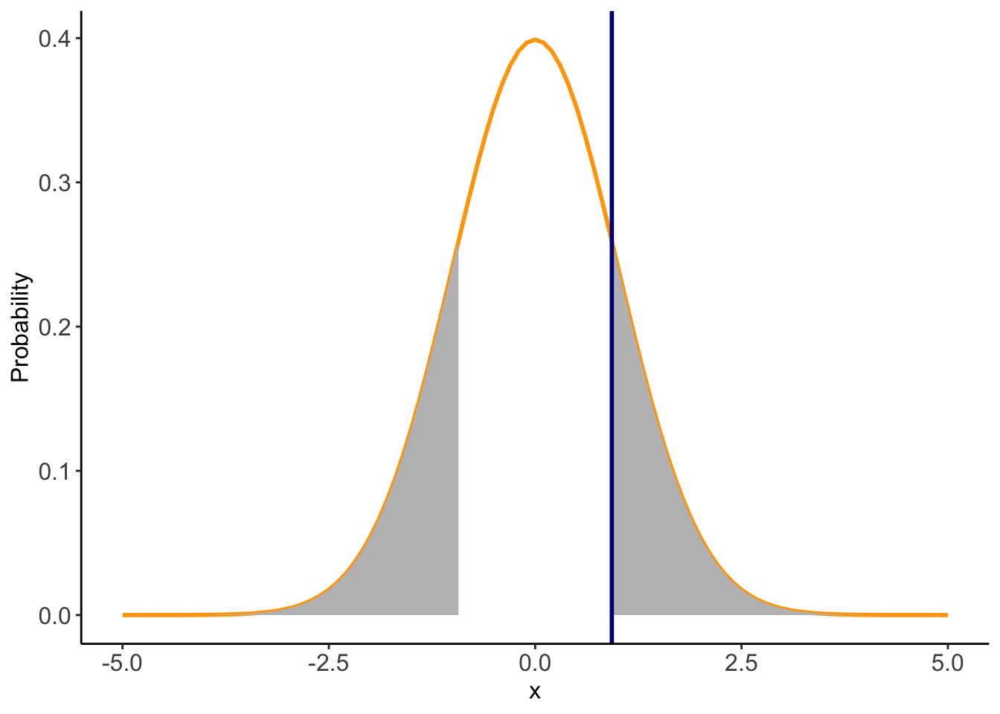
The yellow curve shows a gaussian distribution (mean \(\mu=0\) and standard deviation \(\text{sd}=1\)), and the location of the test-statistic in blue at round(test_statistic, 2).
Code
# Calculate the probability
p_H0 <- 2 * (1 - pt(abs(test_statistic), df=2))
print(paste0("Our two-tailed p-value is ", round(p_H0, 3)))[1] "Our two-tailed p-value is 0.451"Integration of the grey areas (two-sided test) shows that that our p-value is 0.451. (I.e. the probability of the experimental observation occuring to chance under H0.) We thus have to accept H0 and conclude that there is no statistical evidence for differential expression of this gene. (Which was already relatively obvious from simply looking at the counts that were measured.)
Bam!
Hurray, we now have our p-value!
DESeq2’s procedure is quite a bit more involved, but the principles are very close to what we just did.
Some technical notes
The Wald test vs. the t-test
As mentioned, the distribution used for the t-test is the t-distribution, and distribution used during the Wald test is the normal distribution.
The central limit theorem states that if we have enough samples, the mean of will be normally distributed, even if the data follows another distribution (such as the negative binominal distribution, in our case).
This is why we can use the Wald test.
However, the central limit theorem breaks down for small sample sizes. The t-distribution accounts for small sample sizes (gets broader), and is usually more suitable for experiments with small sample sizes. For large sample sizes (\(n \to \infty\)), the t-distribution is equal to the normal distribution. Thus, the t-test is a refinement of the Wald test.
For small sample sizes, in principle, the Wald test is not so suitable. However, since DESeq2 doesn’t base the estimated variability and expression difference (reflected by the fold change) on information only from a single gene, it has more reliable variance estimates, such that we can use the Wald test, and get more statistical power.
Technical: the negative binominal distribution is discrete
DESeq2 works with negative binomial distributions, which describe the statistics of discrete numbers.
After normalization of the counts by the size factors, the counts are not integers any more.
Therefor, under the hood, DESeq2 keeps working with the discrete counts.
For reference, the model is written out below, but the terms used are explained in the next section.
\[ K_{ij} \sim \text{NB}(\mu_{ij}, \alpha_i) \] \[ \log(\mu_{ij}) = \log(s_j) + \mathbf{x}_j \boldsymbol{\beta}_i \]
Which can be written as: \[ K_{ij} \sim \text{NB}( s_j e^{\mathbf{x}_j \boldsymbol{\beta}_i} , \alpha_i) \]
Here, \(K_{ij}\) are the raw counts for gene \(i\) in sample \(j\) that are fitted (“\(y\)” from “\(y = \beta_0 + \beta_1 * x\)”), with \(s_j\) the size factor (and \(x_j\) the condition, and \(\beta_i\) the coefficients that we want to estimate).
\[ e^{\mathbf{x}_j \boldsymbol{\beta}_i} \]
represents our quantity of interest, the size-corrected mean counts that we can compare between samples. (The factor \(s_j\) scales that term back to the raw counts.)
Thus, the size factors are included in the fit.
Technically, this looks like:
MASS::glm.nb(counts ~ condition + offset(log(size_factor)), data = df)What DESeq2 actually does
As will be explained more extensively below, DESeq2 doesn’t simply compare the means of two conditions.
The L2FC equals \(\beta_1\) from a linear model
It instead fits a linear model to the log-transformed counts. In this section we’ll focus on the p-value calculation in DESeq2, so let’s forget about more complicated linear models
and look at a simple example (see the next section that explains DESeq2 uses a GLM and uses dispersion information during fitting):
\[ \text{[mRNA]}_i = e ^ {\beta_{0,i} + \beta_{1,i} x} \]
With \(\text{[mRNA]}\) the concentration of mRNA of gene \(i\) in condition \(x\) (with different conditions represented by numbers, \(x = \{0, 1\}\)), \(\beta_{0,i}\) base level expression, and \(\beta_{1,i}\) the effect of the condition on the expression of gene \(i\). The \(\beta\) constants are the ones that are fitted by DESeq2. The e power is used since DESeq2 works in log-space, which is more suitable for gene expression data.
When calculating the log fold change between two conditions, this amounts to:
\[ log(\text{FC}) = log(\frac{e ^ {\beta_{0,i} + \beta_{1,i} 1} }{e ^ {\beta_{0,i} + \beta_{1,i} 0} }) = log ( e ^ {- \beta_{1,i}} ) = \beta_{1,i} \]
This shows that \(\beta_1\) actually equals the log-fold change. A simple division can convert this to log2 scale, \(\text{L2FC} = \beta_1 / \log(2)\).
The Wald test is based on \(\beta/\text{SE}(\beta_{1,i})\)
The test statistic in DESeq2 therefor is:
\[ \text{test statistic} = \frac{\beta_{1,i}}{\text{SE}(\beta_{1,i})} \]
Where the \(SE\) can be calculated as it is related to the gene-specific variance. The math they use is more advanced, but we saw something similar earlier with \(\text{SE} = \sqrt{\text{variance}}/\sqrt{N}\).
The variances are estimated using Bayesian logics
In the text above, we used a gene specific prediction for the variance:
\[ \text{estimated variance}_\text{gene} = \mu_\text{gene} + \alpha_\text{global fit} \cdot \mu_\text{gene}^2 \]
DESeq2 has a more sophisticated approach that consists of three steps:
1. Gene-wise estimates.
Based on each gene’s observed mean and variance, the \(\alpha_i\) parameter is estimated for each gene. This is done using a generalized linear model (with a design given by the user), which includes the negative binomial probability distribution. Since this also includes \(\beta\) fits according to the model, \(\alpha_i\) can be fitted using information from the multiple conditions, without inter-condition expression differences inflating the variance.
In the text above, we estimated \(\alpha_i\) directly using the within-condition variances and means. DESeq2’s approach with the generalized linear model (GLM) is more precise.
2. Fit a trend.
The second step is one we also did.
DESeq2 fits a curve through the gene-wise dispersion estimates as a function of the mean, capturing the overall mean–dispersion relationship.
3. Shrink toward the trend.
Using a Bayesian approach, which involves updating an initial estimate of a parameter by combining it with additional information (in the form of another probability distribution), DESeq2 now updates it’s initial estimate of the gene-wise dispersion.
Generally, Bayes theorem says: \[ P(\text{A} | \text{B}) = \frac{P(\text{B} | \text{A}) \cdot P(\text{A})}{P(\text{B})} \]
The DESeq2 paper gets very mathematical here, so the following part leans a bit too much on Claude, but is consistent with the paper (disclaimer!) (see equation 9 in the DESeq2 paper).
Applied to the gene expression model, this means \[ P(\alpha_i \mid \text{data}) \propto \underbrace{P(\text{data} \mid \alpha_i)}_{\text{likelihood}} \times \underbrace{P(\alpha_i)}_{\text{prior}} \]
Where \(P(\text{data} \mid \alpha_i)\) is the belief we have about \(\alpha\) from the fit of our data (the GLM), and \(P(\alpha_i)\) is a normal distribution based on the fitted \(\text{variance}(\mu)\) trend.
Final estimate. Finally, this results in a “shrinking” of the dispersion estimate (\(\alpha_i\)) towards the trend. Especially for low certainty estimates (e.g. genes with few counts), the estimate is pulled more strongly towards the trend, while for high certainty estimates (e.g. genes with many counts), the estimate is pulled less strongly towards the trend. After this Bayesian correction, we have the final dispersion estimates.
Relationship to the equation in the paper
To estimate the peak of the final probability, and thus the final dispersion estimate, the mode is used (“MAP”), hence (equation 9 in the DESeq2 paper): \[ a_i^{MAP} = arg max_\alpha (\ell _{CR} (\alpha ; \mu_i, K_i) + \lambda_i(\alpha)) \] where \(\ell _{CR} (\alpha ; \mu_i, K_i)\) corresponds to \(P(\text{data} \mid \alpha_i)\), where the placement of \(\alpha\) is flipped since this is likelihood notation, which still relates to the same probability, but emphasizes that we’re scanning over possible values of \(\alpha\). (The likelihood conveys “given fixed data, which \(\alpha\) is most likely?”) The second function, \(\lambda_i(\alpha)\), corresponds to \(P(\alpha_i)\), the prior. This is a simple Gaussian function, Equation (5) in the DESeq2 paper spells this out. The width of that Gaussian is also based on the width observed in the \(\text{variance}\) - \(\mu\) relationship.
Estimate log fold changes
I WAS EDITING HERE!!
XXXXXXXXXXXXXXXXXXXXXXXXX
THE ESTIMATION OF DISPERSIONS DOES COME FIRST, AND CAN BE INCORPORATED EASILY IN THE MANUAL GLM!!
###### CODE BY CLAUDE ######
# theta = 1/alpha (DESeq2's dispersion alpha, not to be confused with MASS's theta)
# my_alpha <- 0.5 # your dispersion estimate
# glm(
# normalized_count ~ condition_coded,
# data = df,
# family = MASS::negative.binomial(theta = 1 / my_alpha)
# )XXXXXXXXXXXXXXXXXXXXXXXXX
In the end, our aim is to know how changes in gene expression depend on the different conditions of our experiment.
To understand changes in gene expression, we could simply calculate the ratio of average expression in one condition, compared to the other.
# A simple direct calculation of log2 fold changes, using averages
df_l2fc_manual <- count_data_real_long_normalized |>
# first gather averages
group_by(condition, gene) |>
summarise(gene_average = mean(round(normalized_count)), .groups = "drop") |>
# now determine FC
filter(gene_average>0) |>
group_by(gene) |>
pivot_wider(names_from = condition, values_from = gene_average) |>
mutate(FC = FLT/GC,
L2FC = log2(FC)) |>
arrange(desc(L2FC))
head(df_l2fc_manual)# A tibble: 6 × 5
# Groups: gene [6]
gene GC FLT FC L2FC
<chr> <dbl> <dbl> <dbl> <dbl>
1 AT1G09333 1.33 9.33 7 2.81
2 AT1G15580 21 142. 6.78 2.76
3 AT1G04507 0.333 2 6 2.58
4 AT1G07287 0.667 3.67 5.5 2.46
5 AT1G04337 0.333 1.67 5 2.32
6 AT1G05803 0.333 1.67 5 2.32And let’s plot the counts of the top 3 genes to see whether this makes sense:
# Plot the top 3
p <- count_data_real_long_normalized |>
filter(gene %in% df_l2fc_manual$gene[1:3]) |>
mutate(gene = factor(gene, levels=df_l2fc_manual$gene[1:3])) |>
ggplot(aes(x=condition, y=counts, color=condition)) +
geom_point() +
facet_wrap(~gene, scales = "free_y") +
theme_classic() +
xlab('Condition') + ylab('Average normalized count') +
scale_color_manual(values = c("GC" = "brown", "FLT" = "darkblue")) +
custom_theme_bar() +
theme(legend.position = "none")
# Save
ggsave("plots/tut-3/manualfitting_top3_genes.pdf", plot=p, width=20, height=8, units='cm', device=cairo_pdf)
# Show
p + custom_adjust_fonts(12) 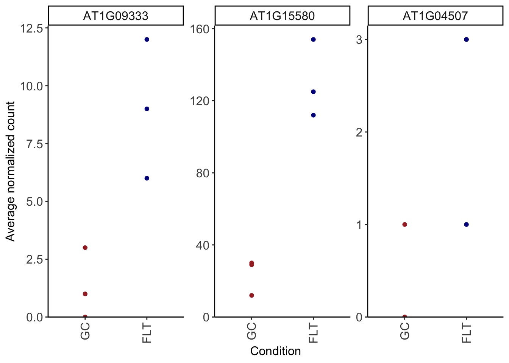
However, to be more precise and versatile (allowing for multiple conditions, e.g.), DESeq2 fits the log2 fold changes using a “GLM” (generalized linear model), which is an extension of a linear model that allows for non-normal distributions (DESeq2 assumes a negative binominal model for gene counts).
For example, if we have the condition \(x\) corresponding to either ground control (\(x=0\)) or space flight (\(x=1\)), we can fit gene expression \(q_i\) for any gene \(i\) with
\[ q_i = \beta_{0,i} + \beta_{1,i} x \]
The idea here is to fit \(\beta\) such that it reflects the effect the condition \(x\) has on the final expression of gene \(i\).
We can perform the GLM fitting procedure as follows:
# Let's manually convert ("dummy-code") the condition to 0 (GC) or 1 (FLT)
count_data_real_long_normalized <- count_data_real_long_normalized |>
mutate(condition_coded = ifelse(condition == "GC", 0, 1))
# We use split-apply to fit each gene separately
model <- count_data_real_long_normalized %>%
split(.$gene) %>%
lapply(
function(df) {
# We use try-catch to deal with edge-cases where there is no
# convergence or other issues, e.g. due to low counts or low variability
tryCatch(
expr =
# The actual fitting (negative binominal model)
MASS::glm.nb(
# The "model", describing q = beta0 + beta1 * condition_coded
formula = normalized_count ~ condition_coded,
# Gene data
data = df
),
error =
# Return NULL in case of error
function(e) NULL
)
})
# Now let's summarize the result by collecting coefficients into dataframe
# Note: this code could be more generalized, but now it's more explicit.
df_coefficients <- data.frame(
gene = names(model),
# go over genes using sapply
coefficient = sapply(model, function(x) {
# obtain coefficient for this gene, converting to log2 instead of log
if (is.null(x)) NA_real_ else coef(x)[["condition_coded"]]
}),
baselvl = sapply(model, function(x) {
# obtain offset (intercept) for this gene
if (is.null(x)) NA_real_ else coef(x)[["(Intercept)"]]
})
) |>
mutate(l2.coefficient = coefficient/log(2)) |>
arrange(desc(l2.coefficient))
Technical notes
MASS::glm.nb() uses a “link” function to couple the output of the linear model to the prediction, and per default it takes the log function, such that what we’re fitting will be \(log(y) = \beta_0 + \beta_1 * x_{\text{condition}}\) (f(z) = log(z) being the link function here). In addition, MASS::glm.nb() (or lm() in general) will dummy-code the condition column, such that GC will be coded as 0, and FLT will be coded as 1 (alphabetical order). Both these default behaviors also apply in DESeq2.
Since \[ \text{ln}(y_\text{FLC} / y_\text{GC}) = ln(e^{(\beta_0 + \beta_1 * x_\text{FLC})} / e^{(\beta_0 + \beta_1 * x_\text{GC})}) = \beta_1 \] with \(y\) begin gene expression, the coefficient \(\beta_1\) directly reflects the log fold change between conditions (and \(\beta_1 / log(2)\) the L2FC). Likewise, the intercept \(\beta_0\) reflects the baseline expression (log scale) in the reference condition (GC).
Thus, we can now inspect the coefficients that we gathered, as they directly represent fold-change. Let’s plot two genes with a big differential expression, and the fits by the GLM.
# Top 10 genes (l2.coefficient = beta_1 / log(2) = L2FC)
head(df_coefficients, n=10) gene coefficient baselvl l2.coefficient
AT1G01046 AT1G01046 22.87520 -22.30259 33.00194
AT1G08027 AT1G08027 21.92187 -21.30259 31.62657
AT1G06783 AT1G06783 21.48378 -21.30259 30.99454
AT1G04157 AT1G04157 21.41088 -21.30259 30.88937
AT1G06453 AT1G06453 21.36275 -20.30259 30.81993
AT1G09853 AT1G09853 21.31509 -20.30259 30.75117
AT1G04497 AT1G04497 21.22849 -21.30259 30.62624
AT1G04013 AT1G04013 21.19124 -20.30259 30.57250
AT1G04287 AT1G04287 21.09263 -21.30259 30.43023
AT1G07763 AT1G07763 21.09263 -21.30259 30.43023# Now calculate the predictions
df_predictions <- df_coefficients %>%
# Add coded condition
mutate(condition.val1 = 0, condition.val2 = 1) %>%
pivot_longer(cols=c(condition.val1, condition.val2), names_to = "condition", values_to = "condition_coded") |>
# Add condition
mutate(condition = ifelse(condition_coded == "0", "GC", "FLT")) %>%
# Add predictions
mutate(prediction = exp(baselvl + coefficient * condition_coded))
# Gather plotting data (top 2 genes, add some plotting-related stuff)
df_plot_counts <- count_data_real_long_normalized |>
filter(gene %in% df_coefficients$gene[1:2]) |>
mutate(
# set lvl order
condition = factor(condition, levels=c("GC", "FLT")),
# add condition_coded
condition_coded = ifelse(condition == "GC", 0, 1)
)
df_plot_pred <- df_predictions |>
filter(gene %in% df_coefficients$gene[1:2]) |>
mutate(condition = factor(condition, levels=c("GC", "FLT"))) |>
# add label
mutate(label = paste0(
"y = exp(", round(baselvl, 2), " + ", round(coefficient, 2), "x)"
))
# .. and plot
p <- ggplot() +
# Plot predictions
geom_line(
data = df_plot_pred,
aes(x=condition_coded, y=prediction+.1, group=gene),
stat='identity')+
geom_label(
data = df_plot_pred,
aes(x = 0, y = Inf, label = label),
hjust = 0.1, vjust = 1.3 # nudge inward from top-right corner
) +
# plot the data
geom_jitter(
data = df_plot_counts,
aes(x=condition_coded, y=normalized_count+.1, color=condition),
width = 0.2, height = 0) +
# grid
facet_grid(cols = vars(gene)) +
# cosmetics
# set xtick labels to display 0 and 1 only
scale_x_continuous(breaks = c(0, 1)) +
scale_y_log10() +
theme_classic() +
custom_adjust_fonts(15) +
ylab("Count") +
theme(legend.position="none") +
scale_color_manual(values = c("GC" = "brown", "FLT" = "darkblue"))
# Save
ggsave("plots/tut-3/manual-GLM_top2_genes.pdf", plot=p, width=13, height=7.5, units='cm', device=cairo_pdf)
# And show
p + custom_adjust_fonts(12)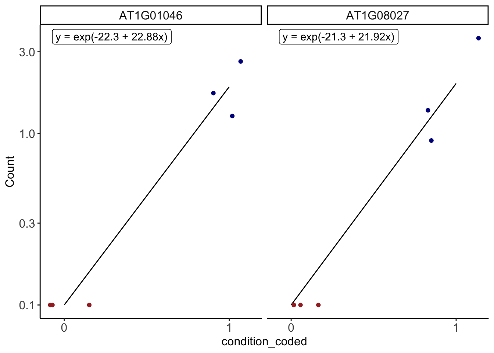
Finally, let’s do a sanity check. Are our L2FC values from the fit similar to those reported by DESeq2?
# Let's also retrieve the L2FC from DESeq2
df_results_combined <-
as.data.frame(
# obtain DESeq2 results, FLT relative to GC
results(dds_full, contrast=c("condition", "space_flight", "ground_control"))
) |>
rownames_to_column(var="gene") |>
left_join(df_coefficients, by='gene')
# And compare
p1 <- df_results_combined |>
ggplot(aes(x=log2FoldChange, y=l2.coefficient)) +
geom_point() +
theme_classic() +
xlab("DESeq2 log2 fold change") +
ylab("Coefficient from manual fit") +
geom_abline(slope=1, intercept=0, color='red', label="x=y") +
ggtitle("All data") +
custom_adjust_fonts()
# Set bounds to main part of data
coeff_low = -5 # quantile(df_results_combined$coefficient, .05, na.rm=TRUE)
coeff_high = 5 # quantile(df_results_combined$coefficient, .95, na.rm=TRUE)
p2 <- p1 +
xlim(c(coeff_low, coeff_high)) +
ylim(c(coeff_low, coeff_high)) +
coord_fixed() +
ggtitle(paste0("L2FC range ", round(coeff_low,1), " to ", round(coeff_high,1)))
p <- p2 + p1
# and save
ggsave("plots/tut-3/manualfitting_log2fc_comparison.pdf", plot=p,
width=20, height=10, units='cm', device=cairo_pdf)
p + custom_adjust_fonts(12) 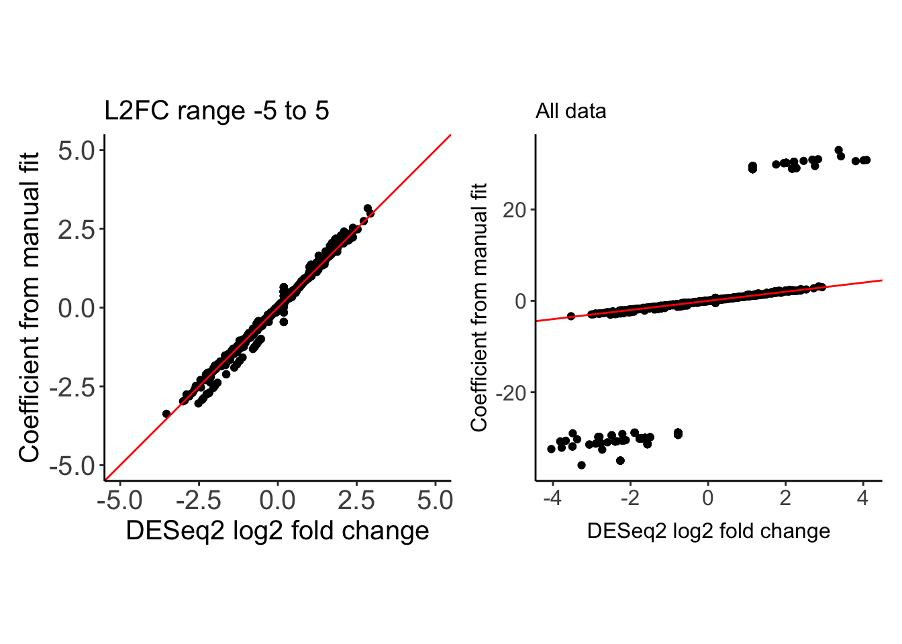
Yes! It appears so. There are some deviations, which are probably due to DESeq2’s better handling of edge cases (e.g. low counts, low variability).
And lastly, as expected, this also compares well to the manual calculation of the L2FC, which can be done easily in this case, as we only have two conditions.
# Add this to the comparison frame as well
df_results_combined <- df_results_combined |>
left_join(df_l2fc_manual, by='gene')
# and compare our fitting to our average l2fc in a scatter plot
range_min = min(df_results_combined$L2FC, na.rm=TRUE)
range_max = max(df_results_combined$L2FC, na.rm=TRUE)
p <- df_results_combined |>
ggplot(aes(x=L2FC, y=l2.coefficient)) +
geom_point() +
theme_classic() +
xlab("Manual log2 fold change (average)") +
ylab("Coefficient from manual fit") +
geom_abline(slope=1, intercept=0, color='red', label="x=y") +
ggtitle("All data") +
custom_adjust_fonts() +
xlim(c(range_min, range_max)) +
ylim(c(range_min, range_max))
p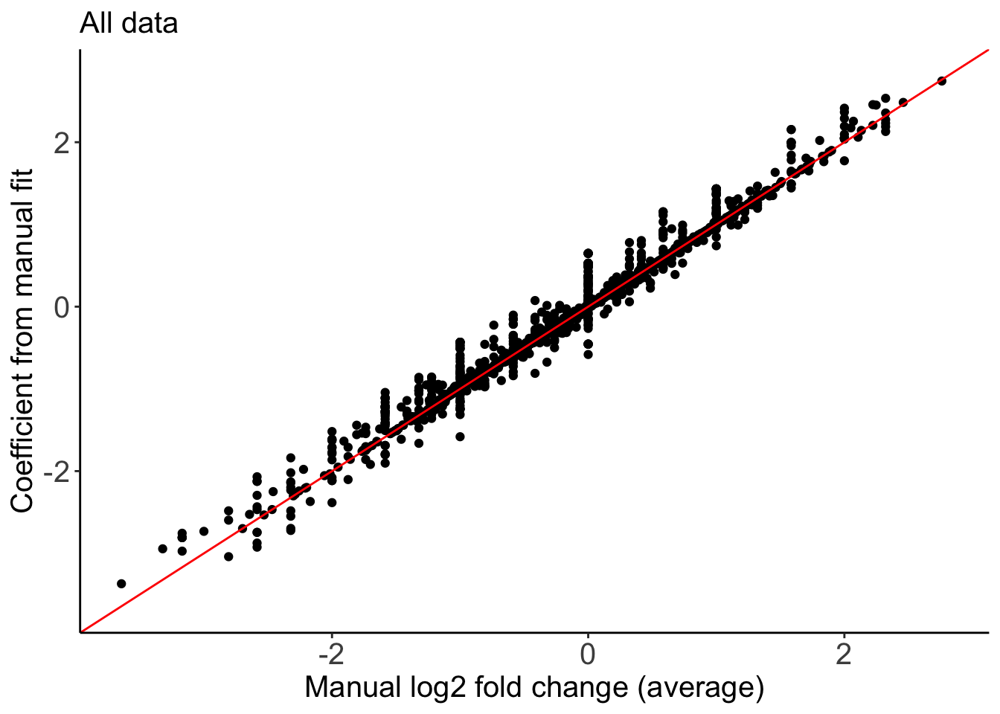
Shrunken L2FC estimates
“A common difficulty in the analysis of [high-throughput sequencing] data is the strong variance of LFC estimates for genes with low read count. (..) weakly expressed genes seem to show much stronger differences between the [conditions] than strongly expressed genes” – (Love, Huber & Anders, 2014)
To counter the effect of blown-up L2FC values in lowly-expressed genes, DESeq2 offers a correction on top of the L2FC estimated by the GLM. The function lfcShrink() applies a “Bayesian” statistics approach, meaning that they re-calculate the estimated L2FC, taking into account the assumption (and corresponding probability distribution) that most genes will have an L2FC of zero, and substantial variability around that zero.
More precisely, a prior is used that is centered at zero (assumption: most genes aren’t DE). Its width is learned from the data, such that genes with weak evidence (low counts → wide likelihood) get pulled more strongly toward zero whilst genes with strong evidence (high counts → narrow likelihood) are barely affected (this is called an empirical Bayes approach, as the prior is based on the data itself).
Calculating p-values (statistical testing)
To achieve this, simply put, DESeq2 will estimate the dispersion (variability) for each gene that is attributed to “randomness”, such that it can estimate whether observed changes lie outside the expected random variability, and are thus likely to be related to the different experimental conditions.
Or, in more technical terms, it will calculate p-values based on dispersion estimates, which reflect the likelihood that H0 (no difference between conditions), is true. If that probability is low (typically \(p<0.05\) or \(<0.01\)), we can reject H0, and say that there is likely a difference between conditions.
The method by which this is done is quite a bit more complicated, but that’s the gist of it.
Text to still re-structure
Fitting gene expression to conditions
EXPLAIN HOW EXPRESSION-CONDITION MODEL IS USED
FIRST FOR ESTIMATING LFC THEN FOR DISPERSION ESTIMATES
Throughout
XXXXXXXXXXXXXXXXXXXXXXXXXXXXXXXXXXX add mean-dispersion relationship quantified in different ways
DESeq2’s handling of dispersion
Estimating dispersion (variabillity) play a big role in DESeq2’s approach. Four of DESeq2’s messages refer to this process.
estimating dispersions
gene-wise dispersion estimates
mean-dispersion relationship
final dispersion estimatesThe first output announces the start of the dispersion section[^Explanation Claude, and see methods.R (estimateDispersions.DESeqDataSet <- function(...), core.R in DESeq2 source 15f2ec9.], the three that follow refer to sub-steps of that procedure.
I don’t pretend to understand the DESeq2 code in full, but we can emulate the process that DESeq2 follows to understand what’s going on.
plotDispEsts(dds_full)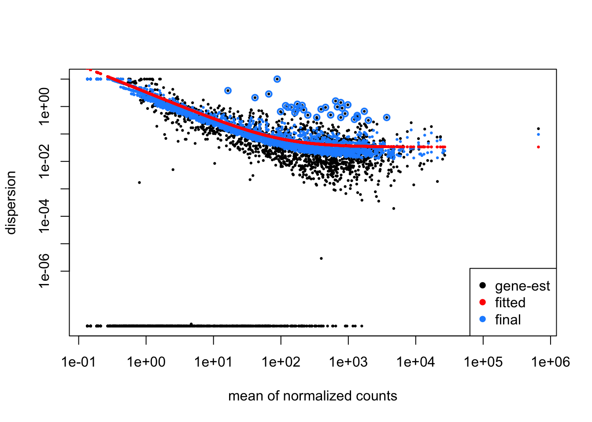
# Information about the dispersion of gene counts plays a big role in
# the DESeq2 analysis.
#
# Dispersion (~variability) can be quantified in multiple way.
#
# Here, we calculate the sd and mean, and additionally "alpha".
# Alpha is (variance-mean)/mean^2).
# this script yields
# - df_dispersion_synth
# - df_dispersion_realVariance, mean, and dispersion
Variance versus mean
# DESeq2 has a dispersion estimate parameter, alpha, defined by
# var(K) = mu + alpha * mu^2
# Thus
# alpha = (var(K)-mu) / mu^2
# Now plot variance versus mean
#
# Very nice source of information:
# https://hbctraining.github.io/DGE_workshop/lessons/01_DGE_setup_and_overview.html#rna-seq-count-distribution
# The red line gives the poisson relationship of the mean and variance
# The blue line gives the negative binominal relationship between mean and variance
fn_NBvariance <- function(mu, alpha) {
return(mu + alpha * mu^2)
}
MY_ALPHA = 1/100
ggplot(df_dispersion_synth, aes(x=mean, y=variance)) +
geom_point() +
geom_abline(slope=1, intercept=0, color='red') +
stat_function(fun=fn_NBvariance, args=list(alpha=MY_ALPHA), color='blue') +
scale_x_log10() + scale_y_log10() +
theme_bw() +
xlab('Mean gene expression (all conditions)') +
ylab('Variance in gene expression (all conditions)')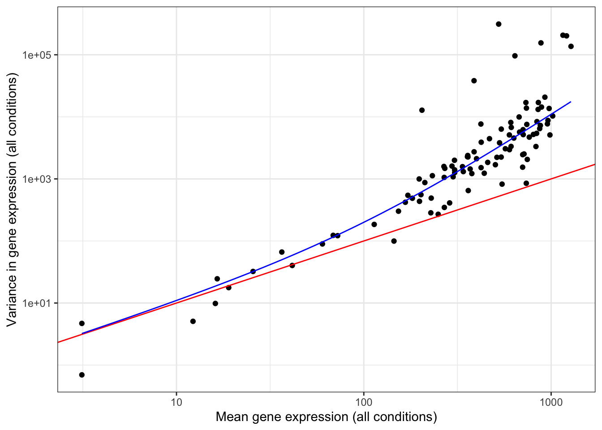
Dispersion estimate plot
# Now plot (var(K)-mu) / mu^2 versus mean
# This produces a similar plot to the dispresion estimate plot of DESeq2
ggplot(df_dispersion_synth, aes(x=mean, y=alpha)) +
geom_point() +
scale_x_log10() + scale_y_log10(limits=c(1e-8, 10))+
xlab("mean") + ylab("dispersion estimate\nalpha = (var(K)-mu) / mu^2")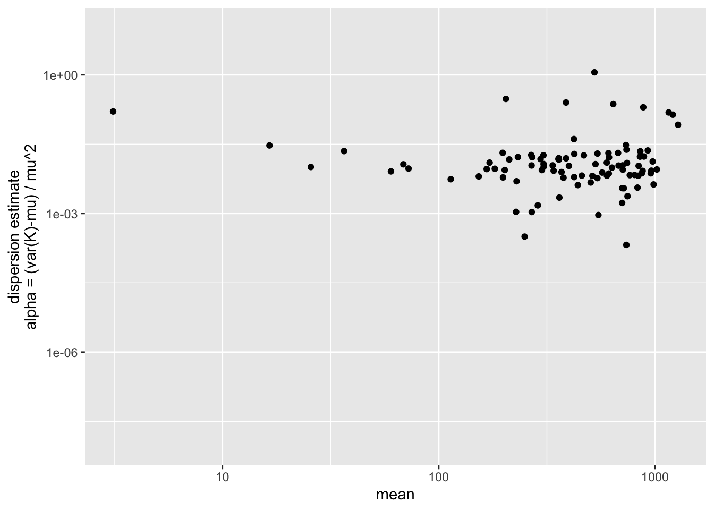
# Note furthermore that DESeq2 selects the top-variance genes for taking
# along in the PCA. Fit dispersion on real data
(..)
Log2 fold change
# Calculate means and log2fc per condition
count_data_real_long_l2fc <- count_data_real_long |>
# first gather averages
group_by(condition, gene) |>
summarise(gene_average = mean(counts)) |>
# now determine FC
filter(gene_average>0) |>
group_by(gene) |>
pivot_wider(names_from = condition, values_from = gene_average) |>
mutate(FC = FLT/GC,
L2FC = log2(FC)) |>
arrange(desc(L2FC))`summarise()` has grouped output by 'condition'. You can override using the
`.groups` argument.# now make a small plot for gene="AT2G41355"
MYGENE = "AT2G41355"
p <- count_data_real_long |>
filter(gene==MYGENE) |>
ggplot(aes(x=condition, y=counts))+
geom_jitter(height = 0, width = 0.1) +
theme_classic() +
ggtitle(MYGENE)
ggsave("plots/tut-3/gene_example_highl2fc.pdf", plot=p, width=7, height=7, units='cm')PCA fundamentals
PCA on synthetic count data
# PCA expects samples as rows, genes as columns, so we transpose.
# We also scale and center the data (z-scores), which is standard practice.
pca_result <- prcomp(t(count_data_synth), center = TRUE, scale. = TRUE)
# How much variance does each PC explain?
pca_var <- summary(pca_result)$importance
print(pca_var[, 1:4]) PC1 PC2 PC3 PC4
Standard deviation 4.671973 4.40038 3.973575 3.662011
Proportion of Variance 0.216110 0.19172 0.156330 0.132780
Cumulative Proportion 0.216110 0.40783 0.564160 0.696930Scree plot
# Plot: variance explained per PC
df_var_explained <- data.frame(
PC = paste0("PC", 1:ncol(pca_var)),
variance_explained = pca_var["Proportion of Variance", ]
) |> mutate(PC = factor(PC, levels = PC))
p_scree <- ggplot(df_var_explained, aes(x = PC, y = variance_explained)) +
geom_bar(stat = "identity") +
theme_classic() +
ylab("Proportion of variance explained") +
ggtitle("Scree plot - synthetic data")
p_scree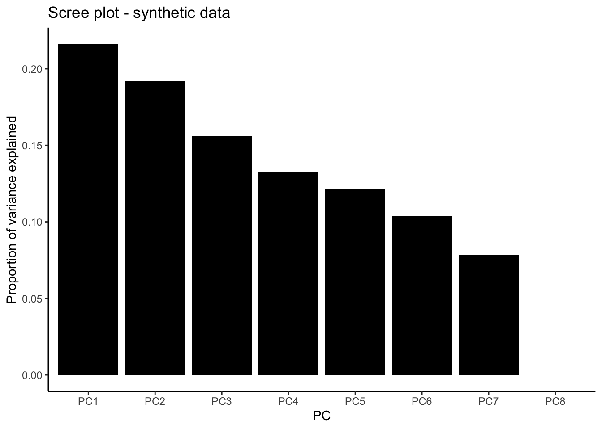
PCA scatter (PC1 vs PC2)
df_scores <- as.data.frame(pca_result$x) |>
mutate(sample = rownames(pca_result$x),
condition = ifelse(str_detect(sample, "^WT"), "WT", "CompoundX"))
p_pca <- ggplot(df_scores, aes(x = PC1, y = PC2, color = condition)) +
geom_point(size = 3) +
theme_classic() +
xlab(paste0("PC1 (", round(pca_var["Proportion of Variance", 1] * 100, 1), "%)")) +
ylab(paste0("PC2 (", round(pca_var["Proportion of Variance", 2] * 100, 1), "%)")) +
ggtitle("PCA - synthetic data")
p_pca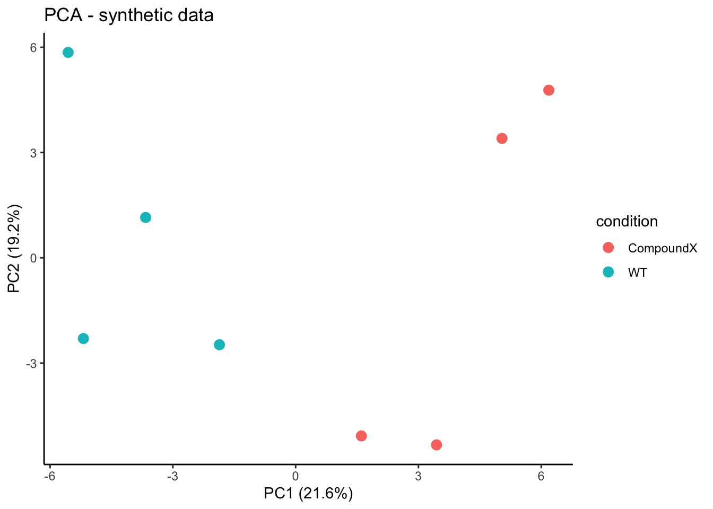
Gene loadings
# The rotation matrix contains the loadings (weights) per gene per PC.
df_loadings <- as.data.frame(pca_result$rotation) |>
rownames_to_column("gene") |>
mutate(PC1_abs = abs(PC1), PC2_abs = abs(PC2))
# Top 15 genes by PC1 loading
top_pc1 <- df_loadings |> arrange(desc(PC1_abs)) |> head(15)
print("Top genes contributing to PC1:")[1] "Top genes contributing to PC1:"print(top_pc1 |> select(gene, PC1)) gene PC1
1 pgi -0.2080614
2 lpdA -0.2056181
3 nrs96 -0.2040647
4 tpiA 0.2014095
5 fumA -0.1976229
6 icd -0.1960296
7 nrs43 -0.1959117
8 pykF 0.1928408
9 nrs46 0.1900615
10 hk101 -0.1856733
11 aceA 0.1765112
12 nrs28 0.1608796
13 nrs27 -0.1469165
14 nrs74 0.1453339
15 nrs89 -0.1449165# Top 15 genes by PC2 loading
top_pc2 <- df_loadings |> arrange(desc(PC2_abs)) |> head(15)
print("Top genes contributing to PC2:")[1] "Top genes contributing to PC2:"print(top_pc2 |> select(gene, PC2)) gene PC2
1 nrs61 0.2010070
2 nrs29 0.1980529
3 nrs62 0.1970980
4 nrs68 0.1951260
5 nrs47 -0.1838474
6 nrs23 -0.1799640
7 nrs64 -0.1721148
8 nrs86 0.1681979
9 nrs95 0.1647184
10 nrs89 -0.1643892
11 nrs58 0.1638932
12 nrs35 0.1586870
13 nrs77 -0.1568567
14 nrs80 0.1543425
15 nrs26 -0.1508373# Plot loadings for PC1
p_loadings <- top_pc1 |>
mutate(gene = fct_reorder(gene, PC1)) |>
ggplot(aes(x = gene, y = PC1)) +
geom_bar(stat = "identity") +
coord_flip() +
theme_classic() +
ggtitle("Top 15 gene loadings on PC1")
p_loadings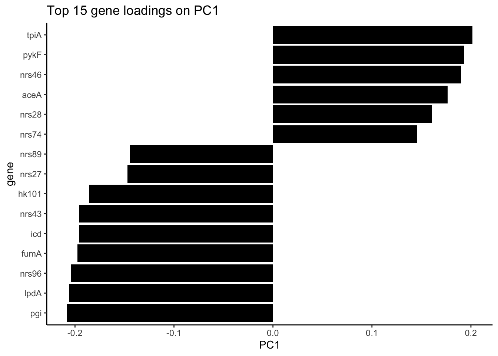
tpiA loading across all PCs
df_tpiA <- df_loadings |>
filter(gene == "tpiA") |>
select(gene, starts_with("PC"), -PC1_abs, -PC2_abs) |>
pivot_longer(-gene, names_to = "PC", values_to = "loading") |>
mutate(PC = factor(PC, levels = paste0("PC", 1:8)))
p_tpiA <- ggplot(df_tpiA, aes(x = PC, y = loading)) +
geom_bar(stat = "identity") +
theme_classic() +
ggtitle("tpiA loading across all PCs")
p_tpiA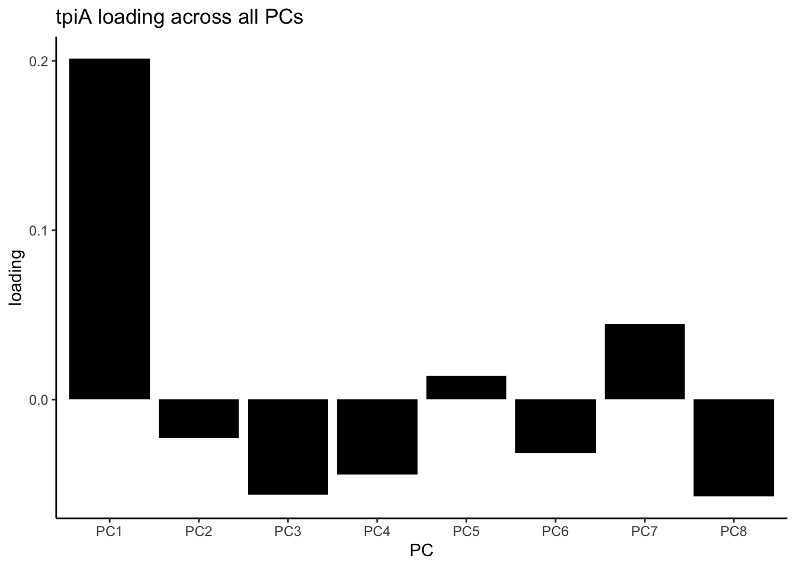
PCA on normalized data
# PCA on normalized (variance-stabilized) data
# This builds on the normalization from the size factors section,
# re-creating the DESeq2 object to then apply VST and run PCA.Variance vs mean (raw)
# There tends to be a trend in the variance, compared to mean expression values.
p <- ggplot(df_dispersion_real, aes(x=mean, y=variance)) +
geom_point(color='grey') +
scale_x_log10() + scale_y_log10() +
theme_classic() +
xlab('Mean gene expression (all conditions)') +
ylab('Variance in gene expression (all conditions)') +
ggtitle('Spaceflight data')
p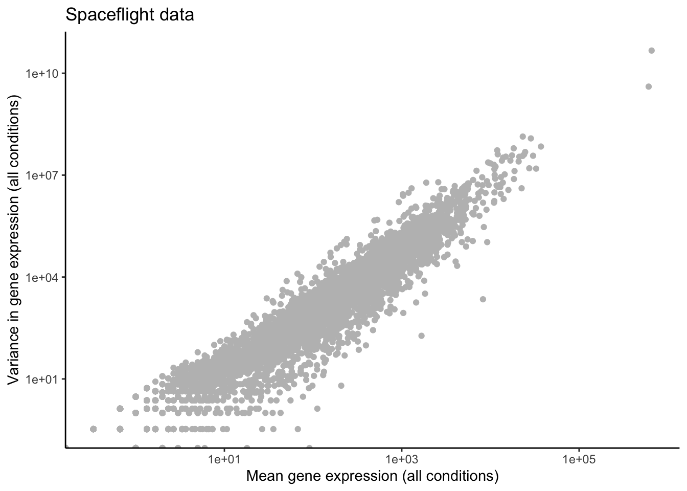
ggsave("plots/tut-3/variance_mean_real_data_raw.pdf", plot=p, width=10, height=10, units='cm')Z-score normalization
# If we were to use z-scores
# (Often done when using PCAs)
count_data_real_long_zscore <- count_data_real_long |>
group_by(gene) |>
mutate(counts_z = counts/sd(counts)) |>
ungroup()
# Plot our gene
MYGENE = "AT2G41355"
p <- count_data_real_long_zscore |>
filter(gene==MYGENE) |>
ggplot(aes(x=condition, y=counts_z))+
geom_jitter(height = 0, width = 0.1) +
theme_classic() +
ggtitle(MYGENE)
p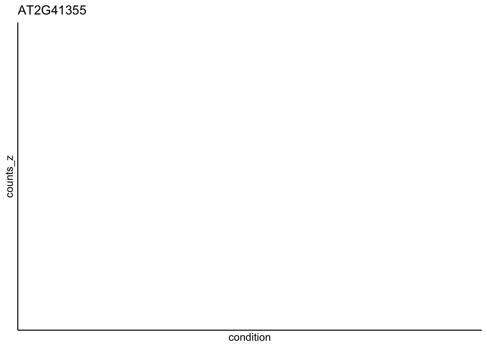
# now calculate dispersions z
df_dispersion_real_zscore <- count_data_real_long_zscore |>
group_by(gene) |>
summarise(mean = mean(counts_z),
sd = sd(counts_z),
variance = var(counts_z)) |>
mutate(alpha = (variance-mean)/mean^2)
# now plot dispersions z
p <- ggplot(df_dispersion_real_zscore, aes(x=mean, y=variance)) +
geom_point(color='grey') +
scale_x_log10() + scale_y_log10() +
theme_classic() +
xlab('Mean gene expression (all conditions)') +
ylab('Variance in gene expression (all conditions)') +
ggtitle('Spaceflight data, z-scores')
p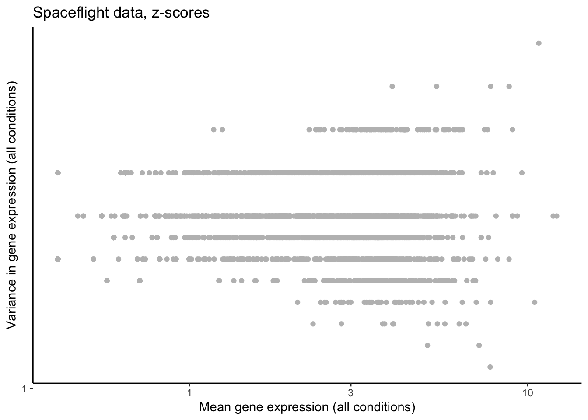
ggsave("plots/tut-3/variance_mean_real_data_zscore.pdf", plot=p, width=10, height=10, units='cm')# similarly, we'd see a trend if we'd take the log
df_disperson_log <- count_data_real_long_zscore |>
mutate(
log_counts = log(counts+.1),
log_counts_z = log(counts_z+.1)) |>
group_by(gene) |>
summarise(
mean_z = mean(log_counts_z),
sd_z = sd(log_counts_z),
variance_z = var(log_counts_z),
mean = mean(log_counts),
sd = sd(log_counts),
variance = var(log_counts))
# plot again
p <- ggplot(df_disperson_log, aes(x=mean, y=variance)) +
geom_point(color='grey') +
scale_x_log10() + scale_y_log10() +
theme_classic() +
xlab('Mean gene expression (all conditions)') +
ylab('Variance in gene expression (all conditions)') +
ggtitle('Spaceflight data')
p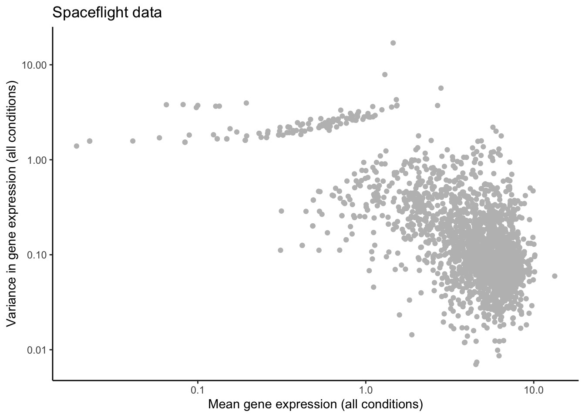
Variance-stabilizing transformation (VST)
# So now let's check out how dispersions look using vst
vsd <- vst(dds)
vst_counts <- assay(vsd)
df_dispersion_ddsvst <- vst_counts |>
as.data.frame() |>
rownames_to_column("gene") |>
pivot_longer(-gene, names_to = "sample", values_to = "counts") |>
group_by(gene) |>
summarise(mean = mean(counts),
sd = sd(counts),
variance = var(counts)) |>
mutate(alpha = (variance - mean) / mean^2)
# now plot
p <- ggplot(df_dispersion_ddsvst, aes(x=mean, y=variance)) +
geom_point(color='grey') +
scale_x_log10() + scale_y_log10() +
theme_classic() +
xlab('Mean gene expression (all conditions)') +
ylab('Variance in gene expression (all conditions)') +
ggtitle('Spaceflight data, variance stabilized')
p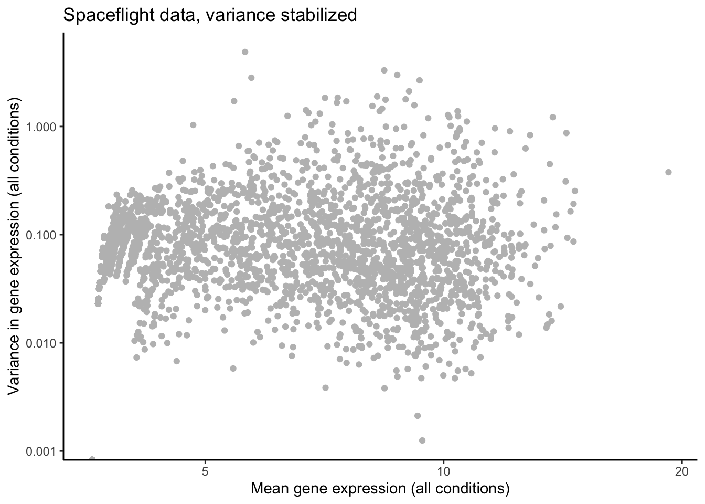
ggsave("plots/tut-3/variance_mean_real_data_vst.pdf", plot=p, width=10, height=10, units='cm')PCA on VST data
# now a pca plot by deseq2
pca_res <- plotPCA(vsd, intgroup = "condition", returnData = TRUE)
p <- ggplot(pca_res, aes(x=PC1, y=PC2, shape=condition,
color=condition)) +
geom_point(size=3) +
theme_classic() +
xlab(paste0("PC1 (", round(100*pca_res$percentVar[1], 1), "%)")) +
ylab(paste0("PC2 (", round(100*pca_res$percentVar[2], 1), "%)")) +
ggtitle("PCA on vst data") +
scale_color_manual(values=c("space_flight"="darkblue", "ground_control"="brown")) +
theme(legend.position = "none")
p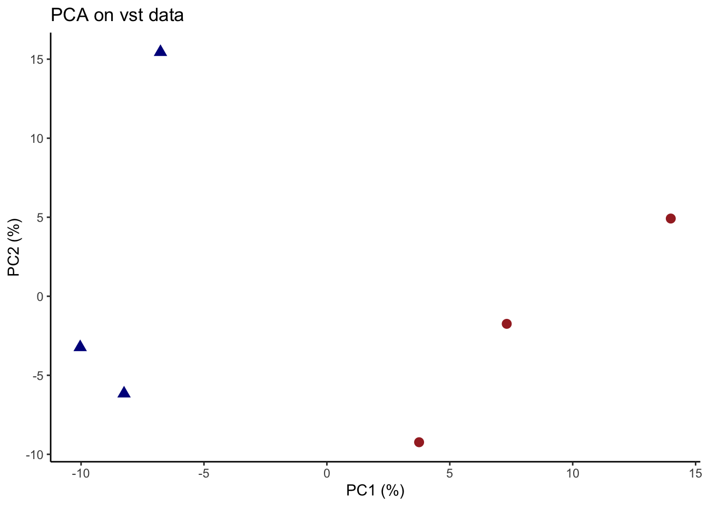
ggsave("plots/tut-3/pca_deseq2.pdf", plot=p, width=10, height=10, units='cm')Normalized count totals (recap)
# Also in the overall DESeq2 analysis, dispersion-stablization is used
# (See also https://hbctraining.github.io/Intro-to-DGE/lessons/04b_DGE_DESeq2_analysis.html)
# So we have
# - Size factor correction
# - Dispersion correction
# Plot, remind ourselves that also the per-sample count normalization went well
normalized_counts_sampletotals <- colSums(normalized_counts)
p <-
data.frame(
counts = unname(normalized_counts_sampletotals),
sample = names(normalized_counts_sampletotals)
) |>
mutate(sample = str_remove(sample, "Atha_WT_Col_0_sl_")) |>
ggplot(aes(x = sample, y = counts)) +
geom_bar(stat = "identity") +
theme_classic() +
theme(axis.text.x = element_text(angle = 90, hjust = 1)) +
xlab("Sample") + ylab("Counts\n(normalized by size factors)")
ggsave("plots/tut-3/total_counts_per_sample_normalized.pdf", plot=p, width=7, height=10, units='cm')